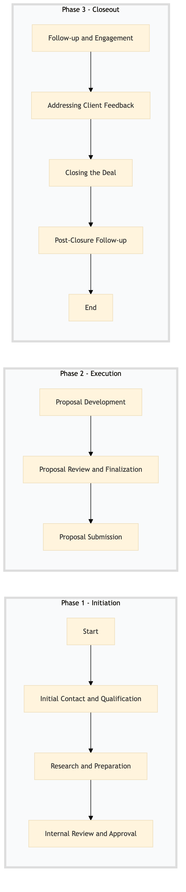

| Role | Steps |
|---|---|
| Sales Executive | 1.1 1.2 2.1 2.2 2.3 3.1 3.2 3.4 |
| Sales Manager | 1.3 3.2 |
| Revenue Manager | 1.3 |
| Content Creator | 2.1 |
| Step | Name | Role | System | Input | Output | KPI | Dec? | Exc? | Pain Point / Risk |
|---|---|---|---|---|---|---|---|---|---|
| 1.1 | Initial Contact and Qualification | Sales Executive | Oracle OPERA Cloud | Client inquiry details | Qualified lead or declined opportunity | Less than 24 hours to qualify a lead | Y | N | Handling large volumes of inquiries efficiently |
| 1.2 | Research and Preparation | Sales Executive | Oracle OPERA Cloud, IDeaS G3 RMS | Qualified lead details | Customized RFP proposal outline | Less than 48 hours to prepare the initial draft | N | Y | Accessing detailed room rate information |
| 1.3 | Internal Review and Approval | Sales Manager, Revenue Manager | Oracle OPERA Cloud, SAP S/4HANA | RFP proposal outline | Approved RFP proposal | Less than 3 business days for approval | Y | N | Coordinating with multiple departments for final approval |
| 2.1 | Proposal Development | Sales Executive, Content Creator | Oracle OPERA Cloud, Microsoft Power BI | Approved RFP proposal outline | Finalized RFP proposal document | Less than 5 business days to complete the proposal | N | Y | Generating compelling visual content |
| 2.2 | Proposal Review and Finalization | Sales Executive, Sales Manager | Oracle OPERA Cloud, Salesforce | Finalized RFP proposal document | Ready-to-send RFP proposal | Less than 2 business days for review and finalization | Y | N | Ensuring compliance with client-specific requirements |
| 2.3 | Proposal Submission | Sales Executive | Oracle OPERA Cloud, Salesforce | Ready-to-send RFP proposal | Sent RFP proposal to client | Less than 1 business day for submission | N | Y | Technical issues with email delivery |
| 3.1 | Follow-up and Engagement | Sales Executive, Relationship Manager | Oracle OPERA Cloud, Salesforce | Sent RFP proposal to client | Client engagement and feedback | Less than 3 business days for first follow-up | Y | N | Maintaining consistent communication with the client |
| 3.2 | Addressing Client Feedback | Sales Executive, Sales Manager | Oracle OPERA Cloud, Salesforce | Client feedback | Updated RFP proposal or clarification responses | Less than 2 business days to address feedback | Y | N | Handling complex client requests |
| 3.3 | Closing the Deal | Sales Executive, Sales Manager | Oracle OPERA Cloud, Salesforce | Updated RFP proposal or clarification responses | Signed contract and agreement | Less than 7 business days from submission to closure | Y | N | Negotiating terms with the client |
| 3.4 | Post-Closure Follow-up | Sales Executive, Relationship Manager | Oracle OPERA Cloud, Salesforce | Signed contract and agreement | Client satisfaction survey and feedback | Less than 1 business day after closure for follow-up | N | Y | Ensuring client satisfaction post-closure |
A structured process document for corporate account prospecting and RFP management at a Marriott full-service hotel using Oracle OPERA Cloud PMS.